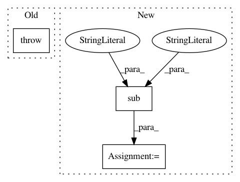

66a06524eba0b22d14204baeb2ca6d4c9db7d1d0,scripts/semantic_types.py,,convert_coq_to_nltk_type,#Any#,245
Before Change
elif type_item.startswith("Event"):
type_ids.append("v")
elif type_item != "->":
raise(ValueError("Invalid type name: %s in %s" % (type_item, coq_type)))
assert len(type_ids) > 0
if len(type_ids) == 1:
nltk_type_str = type_ids[0]
else:
After Change
if not nltk_type_str.startswith("(") or not nltk_type_str.endswith("("):
nltk_type_str = "(" + nltk_type_str + ")"
// Add pre-terminals (necessary for NLTK, if we convert to CNF).
nltk_type_str = re.sub(r"([evt])", r"(N \1)", nltk_type_str)
nltk_type_tree = tree_or_string(nltk_type_str)
nltk_type_tree.chomsky_normal_form(factor="right")
nltk_type_str = remove_labels_and_unaries(nltk_type_tree).replace(
"( ", "(").replace(
"(", "<").replace(
")", ">").replace(
" ", ",")
if len(type_sig) == 1:
nltk_type_str = nltk_type_str.strip("<>")
return {surface : read_type(nltk_type_str)}
In pattern: SUPERPATTERN
Frequency: 3
Non-data size: 3
Instances
Project Name: mynlp/ccg2lambda
Commit Name: 66a06524eba0b22d14204baeb2ca6d4c9db7d1d0
Time: 2017-05-12
Author: pascual@nii.ac.jp
File Name: scripts/semantic_types.py
Class Name:
Method Name: convert_coq_to_nltk_type
Project Name: nipunsadvilkar/pySBD
Commit Name: 4d42b47d967d66468192e8de0c803af1ae1f8934
Time: 2019-04-06
Author: nipunsadvilkar@gmail.com
File Name: pySBD/processor.py
Class Name: Processor
Method Name: consecutive_underscore
Project Name: UFAL-DSG/tgen
Commit Name: 6506f3a125e001e7667771f3c1f570c53dbefd06
Time: 2016-01-08
Author: odusek@ufal.mff.cuni.cz
File Name: tgen/seq2seq.py
Class Name: Seq2SeqGen
Method Name: save_to_file